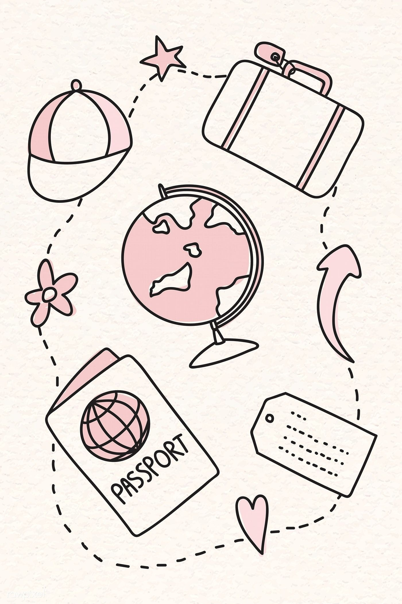
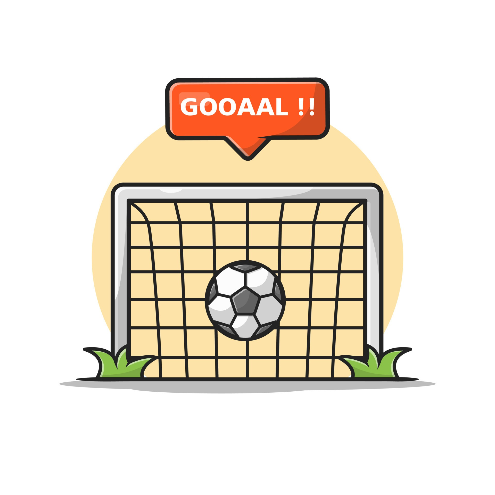

During Covid I got into baking and ever since, I've baked a lot. I enjoy making cookies, brownies, and muffins the most. I'm usually the one that makes birthday cakes or apple pie on Thanksgiving. Baking is really relaxing to me and it's something that clears my head for a while.
I really like traveling and seeing new places and their cultures. I think it's really interesting and I hope to go to new places when I'm older. My parents also really like traveling and they think it's important that I see and experience new cultures.
I've been playing soccer for a while now and it's part of my extracurriculars. I played for the high school team and for my club team this year. I enjoy playing soccer because I get really close to my teammates and it makes it a lot more fun. I also feel like I learn a lot from playing soccer because it teaches how to work with others as a team and how to cooperate.